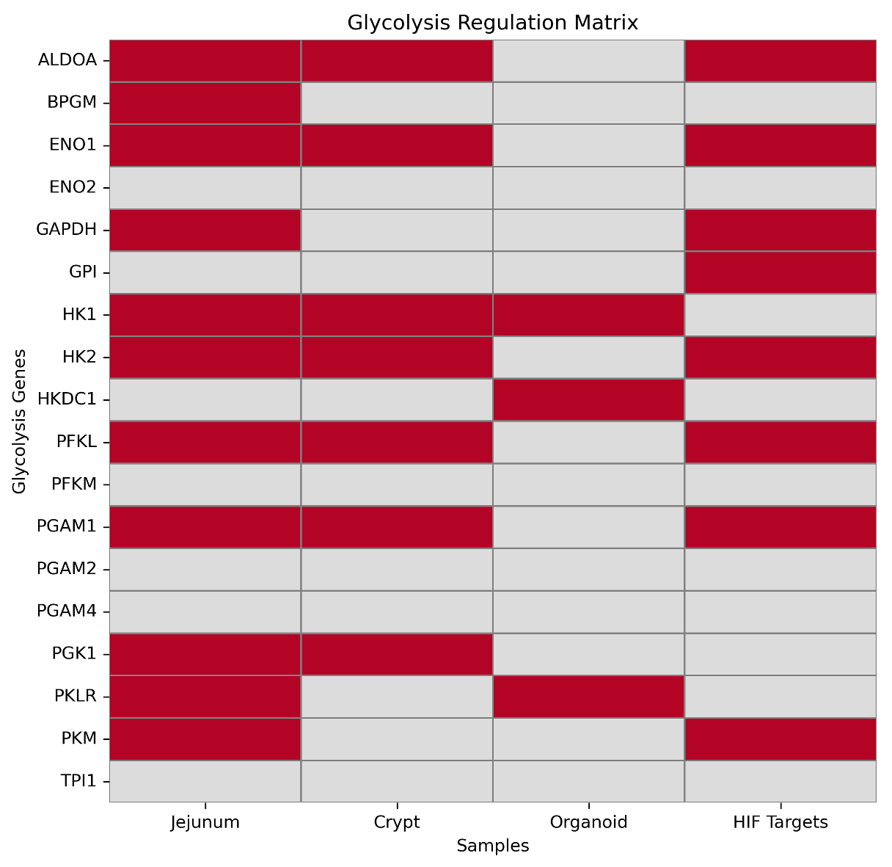
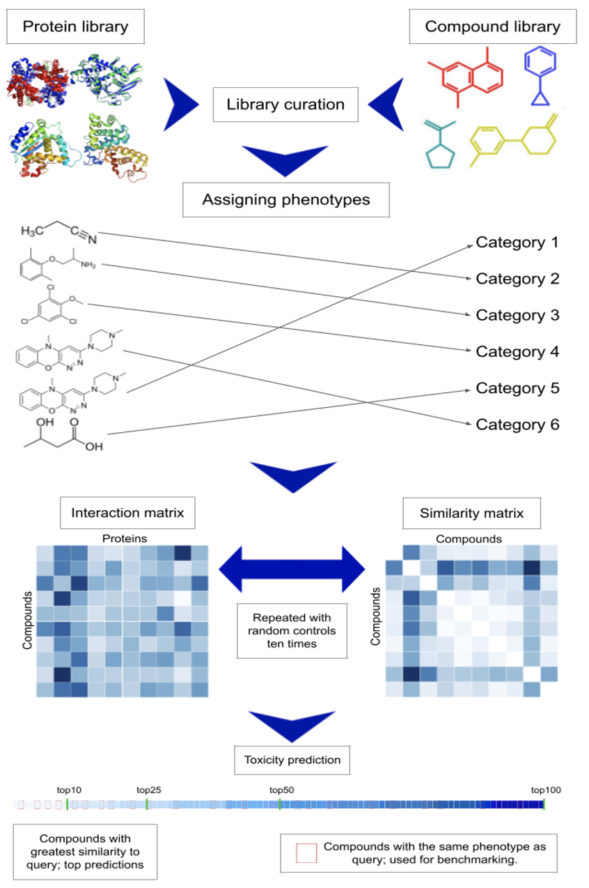

Projects
Altered Glycolysis in Cystic Fibrosis Mice Small Intestine
Cystic Fibrosis (CF) is the most common genetic disease in the U.S., with research primarily focused on pulmonary issues, leaving extrapulmonary complications underexplored. CF is linked to altered carbohydrate and lipid metabolism with transcriptomic data showing glycolysis is upregulated in the jejunum and ileum, but not in organoids derived from crypt cells (laboratory data), suggesting the involvement of in vivo-specific signals. This crypt vs. organoid difference points to endocrine or paracrine signals (e.g., hormones, cytokines) stimulating glycolysis in vivo.
I will analyze upregulated genes from transcriptomic data to identify potential transcription factors driving increased glycolysis. Using bioinformatics tools, I’ll list possible factors, and then refine this list through literature searches. Based on gene expression derived from bulk RNA seq data and the literature search I’m focusing on Hif1a and Nrf2. Understanding their signaling pathways will help explain the dysregulated metabolism in CF intestines. Because Nrf2 is known to be dysfunctional in other organs with CF I hypothesize that dysregulation of Nrf2 due to nonfunctional Cftr leads to increased oxidative stress, which activates Hif1a and drives glycolysis.

Upregulated glycolysis genes by sample type alongside known Hif1a targets. Percent overlap as (# overlapping genes / total targets)*100 for the jejunum, crypt, and organoids are 87.5%, 62.5% and 0% respectively
Computational Prediction of Small Molocule Toxicity
Abstract:
The CANDO platform comprises various pipelines for accurately assigning drugs/compounds to indications/phenotypes. Pipelines typically comprehensively compute interactions between all compounds and all proteins in corresponding libraries, resulting in a compound-proteome interaction signature to describe compound behavior/function. The interaction signatures are compared to each other in an all-against-all fashion and ranked similarity lists are produced. Our hypothesis is that compounds with similar interaction signatures behave/function similarly, and therefore may be associated with the same indication/phenotype. Performance is assessed based on the recovery rate of known drug-indication mappings being recaptured within particular cutoffs in the ranked similarity lists. Compounds within the top ranked cutoffs that are not known mappings are treated as novel predictions for a given indication/phenotype.
Our toxicity prediction pipeline comprises a compound library of 389 small molecules whose median lethal dose (LD50) values after normalizing to mg/kg fell within a range of 1 to 8800 mg/kg, and a protein library of 64 proteins. Each compound was assigned one of twenty phenotypes representing varying toxicity levels. The pipeline was then run as described above using an in-house similarity-based interaction scoring protocol and four performance evaluation metrics were calculated: average phenotype accuracy, average pairwise accuracy, phenotype coverage, and normalized discounted cumulative gain at the top10 cutoff. The average phenotype accuracy of 43.7% represents compounds accurately recaptured within specific cutoffs for a phenotype; the average pairwise accuracy (44%) is a weighted average based on the number of compounds associated with the phenotype; the phenotype coverage is the number of phenotypes with nonzero accuracy (20); and the normalized discounted cumulative gain (0.054) evaluates the ranking quality of predicted compounds per phenotype. In comparison, random controls produced values of 40.4%, 42.2%, 20, and 0.045 respectively for these metrics, demonstrating the improved predictive power of our approach. This study demonstrates the capability of CANDO for accurate small molecule toxicity prediction, which has the potential to improve drug discovery efficiency. Future work will involve regenerating these results with better phenotype classification and using the complete human proteome library, which we expect to generate a larger difference between control and observed values.

Other Project Info:
I have worked with Dr. Samudrala and other lab members through my time at UB to develop my skills in various disciplines such as proteomics, programming (mainly python), HPC, and project development. I also gained presenting experience by being provided numerous opportunities to present my work at poster presentations being held on our medical campus.